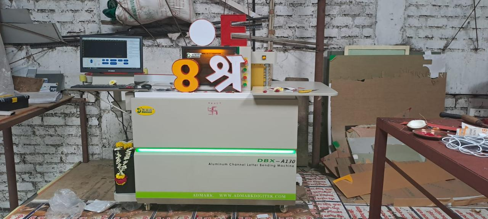

CNC channel bending for aluminum involves the use of Computer Numerical Control (CNC) machines to precisely bend aluminum channels into desired shapes and angles. This advanced technique ensures high accuracy, repeatability, and efficiency, making it ideal for complex designs and industrial applications. Aluminum, being lightweight, corrosion-resistant, and highly malleable, is particularly well-suited for CNC bending processes. The CNC machines use specialized tools and dies to create uniform bends without compromising the material’s structural integrity. This process is commonly used in the fabrication of architectural components, automotive parts, enclosures, and frames, where clean lines and consistent shapes are essential.

An aluminium channel bending machine is used for bending aluminium channels to create 3D letter signs, LED channel letters, and advertising signage with high precision and smooth finishing.
The machine offers accurate bending, faster production speed, reduced manual work, smooth edge finishing, and efficient fabrication for signage manufacturing businesses.
Aluminium channel bending machines are widely used in signage manufacturing, advertising industries, LED signboard production, branding companies, and commercial fabrication businesses.
Yes, these machines are specially designed for manufacturing aluminium LED channel letters, illuminated signboards, and customized advertising signage applications.
You should choose the machine based on bending accuracy, material compatibility, automation features, production capacity, software support, and your signage manufacturing requirements.